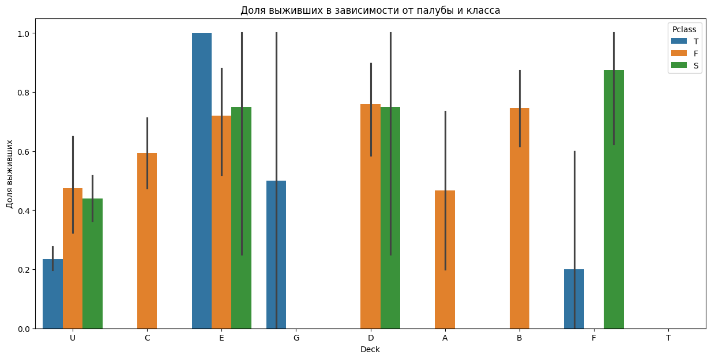
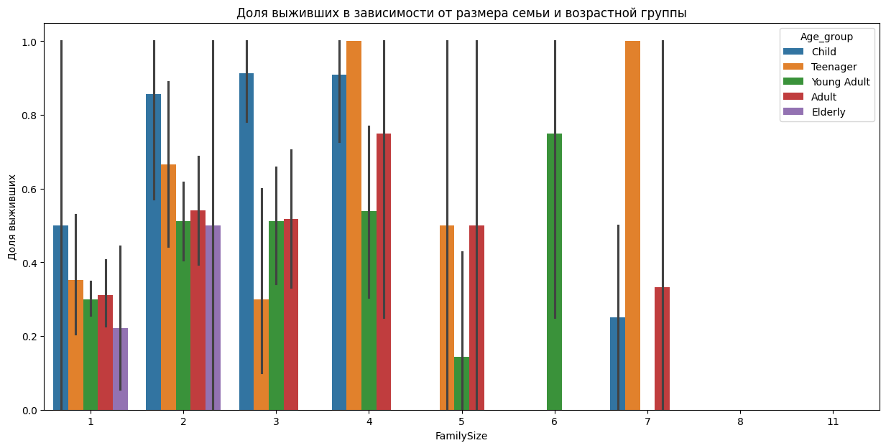
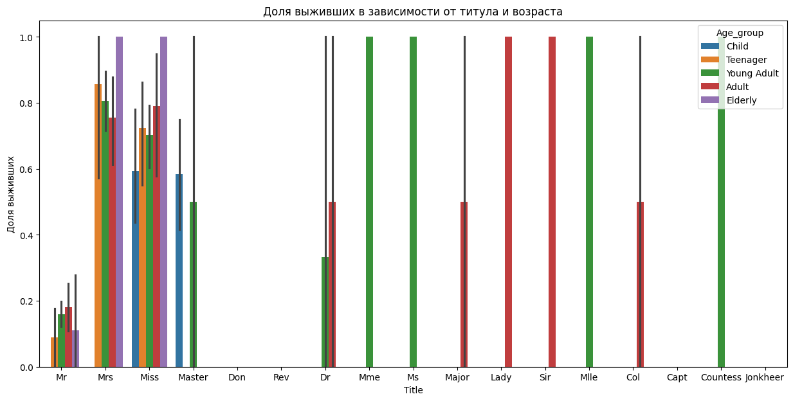
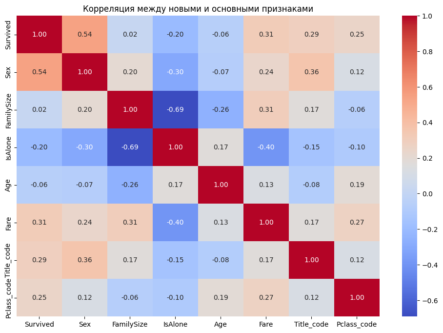

Лабораторная работа №6: Очистка и трансформация данных.pandas
Цель работы
Освоение методов очистки и трансформации данных с использованием библиотеки pandas на примере реальных данных из Kaggle.
Задание
- Первичный анализ данных
Подробнее
- Загрузить данные из CSV-файла
- Вывести первые 10 строк дата-фрейма
- Проверить типы данных каждого столбца
- Определить количество пропусков в каждом столбце
- Получить статистические характеристики числовых признаков
- Построить гистограммы распределения для числовых признаков
- Обработка пропусков
Подробнее
- Определить столбцы с пропусками
- Для столбца Age:
- Посчитать среднее и медианное значение
- Заполнить пропуски медианным значением
- Создать новый признак Age_group на основе заполненного возраста
- Для столбца Embarked:
- Определить наиболее часто встречающееся значение
- Заполнить пропуски модой
- Для столбца Cabin:
- Рассмотреть возможность удаления или создания нового признака на основе первой буквы
- Работа с типами данных
Подробнее
- Преобразовать Pclass в категориальный тип строкового значения (из числового - в строковое: 1 - F, 2 - S, 3 - T )
- Создать новый признак Title из столбца Name (мистер, миссис и т.д.)
- Преобразовать Sex в числовой формат (0/1)
- Создать признак FamilySize = SibSp + Parch + 1
- Создать признак IsAlone (1 если FamilySize = 1, иначе 0)
- Удаление выбросов
Подробнее
- Построить boxplot для признака Fare
- Определить выбросы с помощью IQR-метода
- Визуализировать распределение Age
- Применить winsorization для признака Fare (
- Заменить экстремальные значения на 95-й перцентиль (для Age)
- Агрегация данных
Подробнее
- Посчитать среднее выживание по классам
- Группировать данные по Pclass и Sex
- Посчитать медианный возраст по портам посадки
- Создать сводную таблицу выживаемости по новым признакам
- Сохранить очищенные данные в новый CSV-файл
- Вычислить метрики качества очистки данных
Подробнее
- Процент заполненных пропусков
- Количество уникальных значений в категориальных признаках
- Распределение значений после трансформации
- Корреляция между новыми признаками
Реализация
Ссылка на заполненный ipynb-борд
Набор данных
Используемый набор данных Titanic
Структура данных:
-
PassengerId — идентификатор пассажира
-
Survived — выжил ли пассажир (0 = нет; 1 = да)
-
Pclass — класс билета
-
Name — имя
-
Sex — пол
-
Age — возраст
-
SibSp — количество братьев/сестер/супругов на борту
-
Parch — количество родителей/детей на борту
-
Ticket — номер билета
-
Fare — стоимость билета
-
Cabin — номер каюты
-
Embarked — порт посадки
Первичный анализ
Первая загрузка данных и просмотр их характеристик
train = pd.read_csv(url_train)
train.info()
| # | Column | Non-Null | Count | Dtype |
|---|---|---|---|---|
| 0 | PassengerId | 891 | non-null | int64 |
| 1 | Survived | 891 | non-null | int64 |
| 2 | Pclass | 891 | non-null | int64 |
| 3 | Name | 891 | non-null | object |
| 4 | Sex | 891 | non-null | object |
| 5 | Age | 714 | non-null | float64 |
| 6 | SibSp | 891 | non-null | int64 |
| 7 | Parch | 891 | non-null | int64 |
| 8 | Ticket | 891 | non-null | object |
| 9 | Fare | 891 | non-null | float64 |
| 10 | Cabin | 204 | non-null | object |
| 11 | Embarked | 889 | non-null | object |
dtypes: float64(2), int64(5), object(5)
Статистика датафрейма
В ходе выполнения заданий из файла был проведен первичный осмотр данных:
-
Типы данных: обнаружено сочетание числовых (int64, float64) и объектных (object) типов.
-
Основные характеристики: средний возраст пассажиров составил около 29.7 лет, а средняя стоимость билета — 32.20.
Пустые значения по столбцам
Был выявлен дефицит данных в трех столбцах:
-
Age: ~20% пропусков.
-
Cabin: >77% пропусков.
-
Embarked: всего 2 пропущенных значения.
train.isnull().sum()
Визуализация пропусков
| 0 | |
|---|---|
| PassengerId | 0 |
| Survived | 0 |
| Pclass | 0 |
| Name | 0 |
| Sex | 0 |
| Age | 177 |
| SibSp | 0 |
| Parch | 0 |
| Ticket | 0 |
| Fare | 0 |
| Cabin | 687 |
| Embarked | 2 |
dtype: int64
Обработка пропусков
Методы заполнения
Согласно заданию, были применены следующие подходы:
-
Age - заполнение медианным значением (28.0), так как оно более устойчиво к выбросам, чем среднее.
-
Embarked - заполнение модой (самым частым значением — 'S').
-
Cabin - трансформация в признак Deck (первая буква каюты), пустые значения помечены как 'U' (Unknown).
embarked_mode = train['Embarked'].mode()[0]
train['Deck'] = train['Cabin'].str[0].fillna('U')
| Deck | |
|---|---|
| U | 687 |
| C | 59 |
| B | 47 |
| D | 33 |
| E | 32 |
| A | 15 |
| F | 13 |
| G | 4 |
| T | 1 |
| Name: count, dtype: int64 |
embarked_age_median = train.groupby('Embarked')['Age'].median()
| Embarked | |
|---|---|
| C | 28.0 |
| Q | 28.0 |
| S | 28.0 |
| Name: Age, dtype: float64 |
Результаты обработки
После обработки и удаления исходного столбца Cabin процент незаполненных данных был сведен к 0.00%.
missing_after = train.isnull().sum().sum()
total_cells = train.size
completion_rate = ((missing_after / total_cells)) * 100
Трансформация данных
Созданные признаки
На этапе работы с типами данных были сгенерированы новые переменные.
-
Title - извлечение титула из имени (например, Mr, Mrs, Miss) с использованием регулярных выражений.
-
FamilySize - сумма родственников на борту (SibSp + Parch + 1).
-
IsAlone - бинарный признак (1 — если пассажир один, 0 — если с семьей).
-
Age_group - категоризация возраста (Child, Adult и т.д.).
Преобразования типов
-
Sex переведен в числовой формат (0 для male, 1 для female).
-
Pclass преобразован из чисел в строковые категории (F, S, T) для корректного анализа.
Обработка выбросов
Выявленные выбросы
С помощью boxplot обнаружены экстремальные значения в признаке Fare. По методу IQR границы составили [Q1 - 1.5 \cdot IQR, Q3 + 1.5 \cdot IQR].
Методы обработки
Winsorization:
- Значения Fare выше 95-го перцентиля были приравнены к значению этого перцентиля.
- Экстремально высокие значения Age также заменены на 95-й перцентиль для сглаживания распределения.
Агрегация и анализ
Сводные статистики
Использование pivot_table позволило выявить зависимости:
-
Выживаемость женщин с титулами Mrs и Miss достигает 0.7–1.0.
-
Пассажиры с высоким социальным статусом (Countess, Sir) имеют выживаемость 1.0.
-
Мужчины с титулом Mr в группе Adult выживали лишь в 18% случаев.
Визуализации
Группировка по Pclass и Sex подтвердила, что женщины из 1-го класса (F) имели наивысшие шансы на спасение (~96%), в то время как мужчины из 3-го класса (T) — наинизшие (~13%).
grouped_pclass_sex = train.groupby(['Pclass', 'Sex'])['Survived'].mean()
| Pclass | Sex | |
|---|---|---|
| F | 0 | 0.368852 |
| 1 | 0.968085 | |
| S | 0 | 0.157407 |
| 1 | 0.921053 | |
| T | 0 | 0.135447 |
| 1 | 0.500000 | |
| Name: Survived, dtype: float64 |
Сводные таблицы:



Заключение
Результаты работы
- Данные полностью очищены от пропусков (итоговый процент заполнения — 100%).
- Создан расширенный набор признаков, более точно описывающий социальный и семейный статус пассажиров.
- Обработаны аномалии в стоимости билетов и возрасте, что сделало распределения более пригодными для анализа.
- Итоговый датасет сохранен в файл titanic_cleaned_final.csv
Выводы

Очистка и трансформация данных — критически важный этап. На примере датасета Титаника доказано, что такой подход к признакам (создание Title и FamilySize) позволяет выявить скрытые закономерности, которые невозможно увидеть в сырых данных. Выживаемость напрямую зависела от пола, социального класса и наличия семьи.